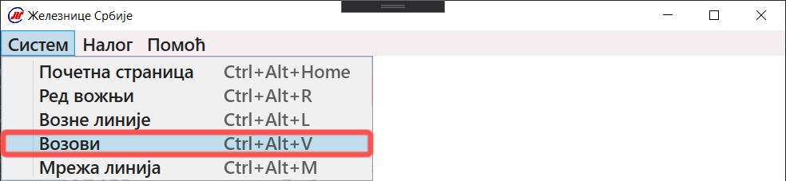

Да бисте приказали возове, у горњем левом углу прозора притисните дугме "Систем". Након тога ће Вам се приказати мени и треба да притиснете дугме "Возови" као што је приказано на слици:
Такође можете користити пречицу Ctrl+Alt+V да бисте приказали возове.
Прозор који ће Вам се иницијално приказати је приказан на слици:

У табели назначеној на слици се налазе сви доступни возови.
За приказ детаља, притисните онај воз чији детаљи Вас занимају.

Након одабира воза, приказаће се детаљи као на слици:

За брисање одабраног воза притисните дугме "Обриши воз" које се налази на дну прозора.
За додавање новог возa притисните дугме "Додај воз" на дну прозора које ће отворити форму за унос:

Потребно је да попуните сва поља. Да бисте додали воз, притисните дугме "Додај" као на слици:

Шифра воза мора бити јединствена и у формату приказаном на слици изнад.